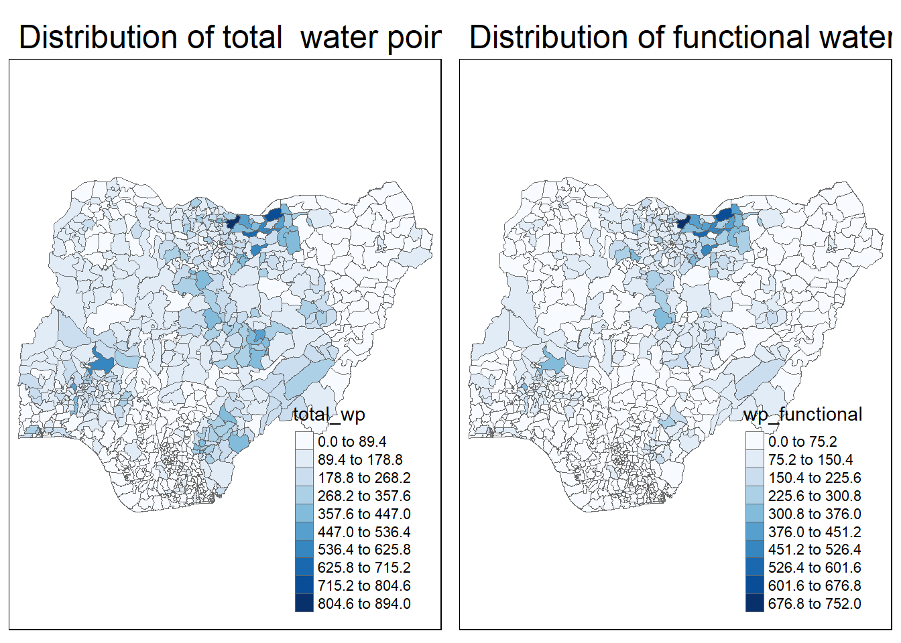
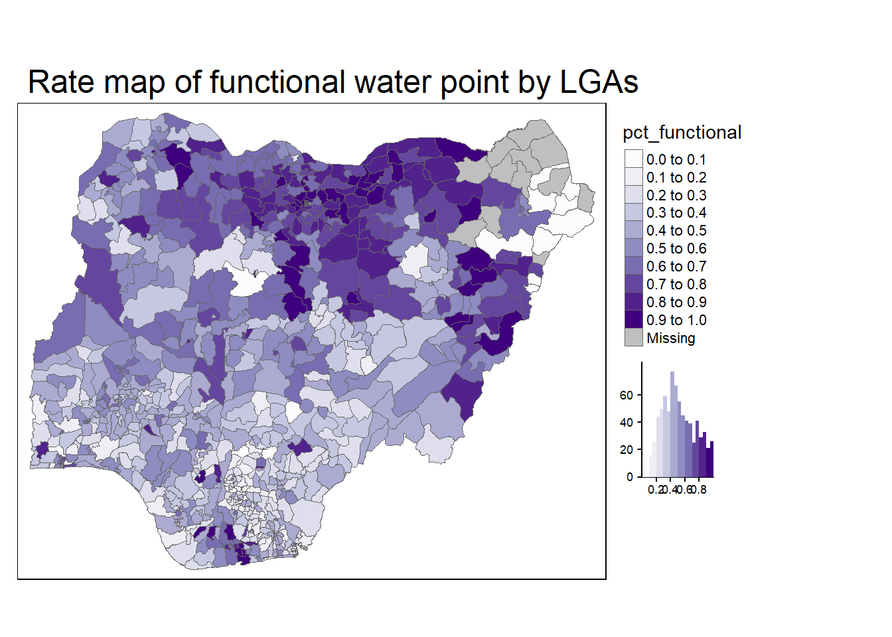
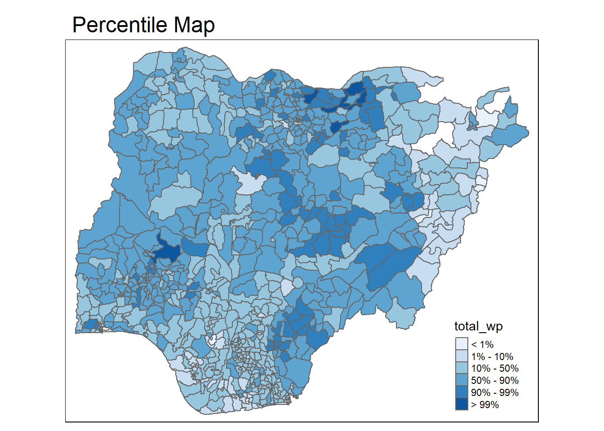
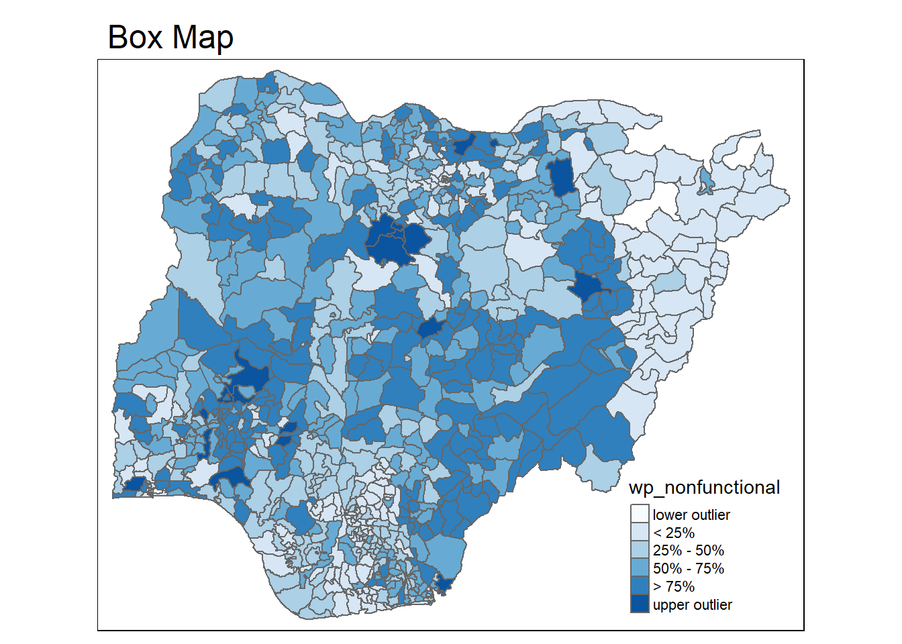

Code
pacman::p_load(sf, tmap, tidyverse)With the assistance of ChatGPT
In this exercise, we will gain hands-on experience on using appropriate R methods to plot analytical maps.
By the end of this exercise, we will learn to use tmap and tidyverse functions to:
pacman::p_load(sf, tmap, tidyverse)The dataset NGA_wp.rds is a polygon feature data frame containing water point information for Nigeria at the LGA level. It will be used for this hands-on exercise.
NGA_wp <- read_rds("data/data/rds/NGA_wp.rds")We will use the code below to plot a choropleth map showing the distribution of non functioning water points by LGA.
p1 <- tm_shape(NGA_wp) +
tm_fill("wp_functional",
n = 10,
style = "equal",
palette = "Blues") +
tm_borders(lwd = 0.1,
alpha = 1) +
tm_layout(main.title = "Distribution of functional water point by LGAs",
legend.outside = FALSE)
p2 <- tm_shape(NGA_wp) +
tm_fill("total_wp",
n = 10,
style = "equal",
palette = "Blues") +
tm_borders(lwd = 0.1,
alpha = 1) +
tm_layout(main.title = "Distribution of total water point by LGAs",
legend.outside = FALSE)tmap_arrange(p2, p1, nrow = 1)
Mapping rates instead of counts is crucial because water points are not evenly distributed in space. Without accounting for the number of water points in an area, we risk mapping total water point size rather than the actual topic of interest.
We will calculate the proportion of functional and non-functional water points for each LGA. Using mutate() from the dplyr package, we derive two new fields: pct_functional and pct_nonfunctional.
NGA_wp <- NGA_wp %>%
mutate(pct_functional = wp_functional/total_wp) %>%
mutate(pct_nonfunctional = wp_nonfunctional/total_wp)We will use the code below to plot a choropleth map showing the distribution of percentage functional water point by LGA.
tm_shape(NGA_wp) +
tm_fill("pct_functional",
n = 10,
style = "equal",
palette = "Purples",
legend.hist = TRUE) +
tm_borders(lwd = 0.1,
alpha = 1) +
tm_layout(main.title = "Rate map of functional water point by LGAs",
legend.outside = TRUE)
Extreme value maps are a type of choropleth map designed to highlight outliers at the lower and upper extremes of a dataset. They help in spatializing Exploratory Data Analysis (EDA) by incorporating spatial features into traditional non-spatial EDA methods (Anselin, 1994).
A percentile map is a specialized quantile map with six predefined categories: 0-1%, 1-10%, 10-50%, 50-90%, 90-99%, and 99-100%. The breakpoints are determined using the quantile() function in base R, with cumulative probabilities set as c(0,.01,.1,.5,.9,.99,1).
Step 1: Exclude records with NA by using the code below.
NGA_wp <- NGA_wp %>%
drop_na()Step 2: Creating customised classification and extracting values.
percent <- c(0,.01,.1,.5,.9,.99,1)
var <- NGA_wp["pct_functional"] %>%
st_set_geometry(NULL)
quantile(var[,1], percent) 0% 1% 10% 50% 90% 99% 100%
0.0000000 0.0000000 0.2169811 0.4791667 0.8611111 1.0000000 1.0000000 When variables are extracted from an sf data.frame, the geometry is extracted as well. For mapping and spatial manipulation, this is the expected behavior, but many base R functions cannot deal with the geometry. Specifically, the quantile() gives an error. As a result st_set_geomtry(NULL) is used to drop geomtry field.
Writing functions instead of using copy-and-paste has three key advantages:
We will create an R function to extract a variable (e.g., wp_nonfunctional) as a vector from an sf data frame.
get.var <- function(vname,df) {
v <- df[vname] %>%
st_set_geometry(NULL)
v <- unname(v[,1])
return(v)
}Next, we will write a percentile mapping function by using the code chunk below.
percentmap <- function(vnam, df, legtitle=NA, mtitle="Percentile Map"){
percent <- c(0,.01,.1,.5,.9,.99,1)
var <- get.var(vnam, df)
bperc <- quantile(var, percent)
tm_shape(df) +
tm_polygons() +
tm_shape(df) +
tm_fill(vnam,
title=legtitle,
breaks=bperc,
palette="Blues",
labels=c("< 1%", "1% - 10%", "10% - 50%", "50% - 90%", "90% - 99%", "> 99%")) +
tm_borders() +
tm_layout(main.title = mtitle,
title.position = c("right","bottom"))
}To run the function, type the code chunk as shown below.
percentmap("total_wp", NGA_wp)
This is a basic implementation, but additional arguments (e.g., title, legend positioning) can be included to customize various map features.
A box map is an enhanced quartile map that includes extra categories for outliers.
ggplot(data = NGA_wp,
aes(x = "",
y = wp_nonfunctional)) +
geom_boxplot()
Displaying summary statistics on a choropleth map by using the basic principles of boxplot.
To create a box map, a custom breaks specification will be used. However, there is a complication. The break points for the box map vary depending on whether lower or upper outliers are present.
The code chunk below is an R function that creating break points for a box map.
boxbreaks <- function(v,mult=1.5) {
qv <- unname(quantile(v))
iqr <- qv[4] - qv[2]
upfence <- qv[4] + mult * iqr
lofence <- qv[2] - mult * iqr
# initialize break points vector
bb <- vector(mode="numeric",length=7)
# logic for lower and upper fences
if (lofence < qv[1]) { # no lower outliers
bb[1] <- lofence
bb[2] <- floor(qv[1])
} else {
bb[2] <- lofence
bb[1] <- qv[1]
}
if (upfence > qv[5]) { # no upper outliers
bb[7] <- upfence
bb[6] <- ceiling(qv[5])
} else {
bb[6] <- upfence
bb[7] <- qv[5]
}
bb[3:5] <- qv[2:4]
return(bb)
}The code chunk below is an R function to extract a variable as a vector out of an sf data frame.
get.var <- function(vname,df) {
v <- df[vname] %>% st_set_geometry(NULL)
v <- unname(v[,1])
return(v)
}var <- get.var("wp_nonfunctional", NGA_wp)
boxbreaks(var)[1] -56.5 0.0 14.0 34.0 61.0 131.5 278.0The code chunk below is an R function to create a box map. - arguments: - vnam: variable name (as character, in quotes) - df: simple features polygon layer - legtitle: legend title - mtitle: map title - mult: multiplier for IQR - returns: - a tmap-element (plots a map)
boxmap <- function(vnam, df,
legtitle=NA,
mtitle="Box Map",
mult=1.5){
var <- get.var(vnam,df)
bb <- boxbreaks(var)
tm_shape(df) +
tm_polygons() +
tm_shape(df) +
tm_fill(vnam,title=legtitle,
breaks=bb,
palette="Blues",
labels = c("lower outlier",
"< 25%",
"25% - 50%",
"50% - 75%",
"> 75%",
"upper outlier")) +
tm_borders() +
tm_layout(main.title = mtitle,
title.position = c("left",
"top"))
}tmap_mode("plot")
boxmap("wp_nonfunctional", NGA_wp)
tmap provides powerful tools for spatial analysis and visualization.